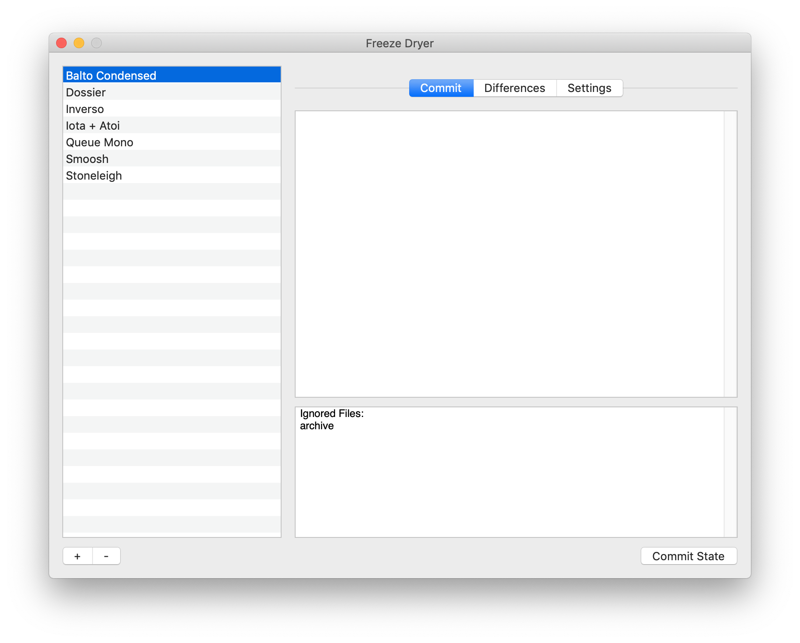

Welcome! You either just launched Freeze Dryer for the first time or you came here looking for specific information. Either way, great! Let me start by saying what this tool is:
Freeze Dryer is a minimal, file-system based versioning system and backup tool specifically developed for font development.
Here is a list of what it does:
Here is a partial list of what it does not do:
Before I get into how to use this tool, let's establish some basics:
There's no set process for working with Freeze Dryer. You tell Freeze Dryer about your project, commit states as needed and the end. For example:
Freeze Dryer doesn't require a standard project structure (see the reference section below for complete details on this), but here is one of my project structures (with <- annotations) as an example of these terms:
/Inverso <- this is a project and this is the root of the project Master-Primo.ufo Master-Primo Italico.ufo Master-Ultimo.ufo Master-Ultimo Italico.ufo freeze dryer.plist /features italic.fea italic-c.fea roman.fea roman-c.fea /interpolation italic.designspace roman.designspace /proofs masters.indd instances.indd /scripts italic starter.py /ignore secret stuff.txt more secrets.md /archive <- this is the archive /2020-03-15-04-02 <- this is a state 2020-03-15-04-02 glyphs.pdf sketch.ufo /2020-03-22-19-01 <- this is another state 2020-03-22-19-01 glyphs.pdf light sketch.ufo bold sketch.ufo /proofs sketch.indd
Almost all of the time that you need to use this tool, you'll be using the Projects window.

The Projects window contains two sections:
The projects list shows all of the projects known to Freeze Dryer. To add a project, press the "+" button and select the root of the project you want to add. This will initialize the project for use in Freeze Dryer. (This is a non-destructive process that only adds a settings file to the root.) To remove a project, select the project in the list and press the "-" button. (This is a non-destructive process that only removes the project from the list of projects known to Freeze Dryer. It doesn't remove any files.)
The project action panes allow you to do stuff with and to your project.
The Commit pane allows you to commit the current state of the project to the archive. A commit action will copy all of the files and directories (unless they are set to be ignored) in the root's into a state directory in the archive.
There are two panels:
When you are ready, press the Commit State button and everything will happen.
The Differences pane allows you to view differences between states of your project. An example of the report can be seen here. There are some options when comparing the states:
When you are ready, press the Compile button and wait (maybe a while) for the result to appear in a new window.

The Settings pane allows you to view and edit the Freeze Dryer settings for the selected project.
/ the pattern is relative to the root of the project. Otherwise the pattern may match at any level within the project.There is no specific structure. There are, however, some reserved file names and locations:
Anything inside of a root level directory named ignore will not be included in a state.
The default location for the archive is in a root level directory named archive. Therefore, anything in a directory with this name will not be included in a state.
The settings for this tool are stored in a root level file named freeze dryer.plist.
States will be stored in a time stamped directory. The time stamp is in Coordinated Universal Time in this format: ####-##-##-##-## where the components are: year-month-day-hour-minute. It's only granular to the minute, but I don't need more granularity in the context of my font development projects.
The following files will be written as needed: